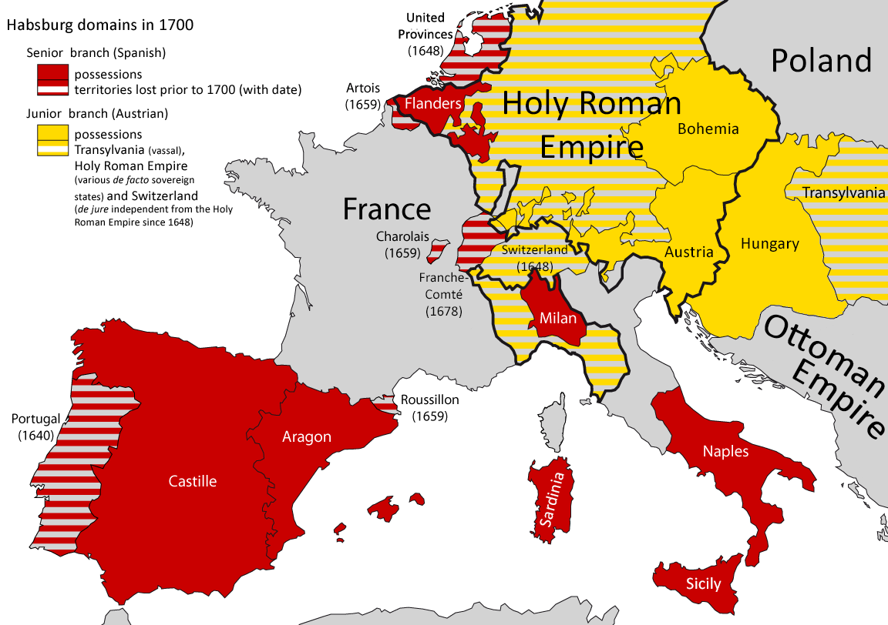

The French Empire vs. The German Empire: A Rivalry for European Dominance
By: Thomas
Introduction
The 19th and early 20th centuries marked a period of intense competition and rivalry between two European superpowers: the French Empire and the German Empire. At the heart of this conflict lay a struggle for political, economic, and military control over the continent, as well as a deep-seated historical animosity between the two nations. This rivalry would ultimately come to a head during the First World War, with devastating consequences for all involved.
While the French and German Empires shared many similarities in terms of their size, resources, and cultural influence, their divergent ambitions and priorities would set them on a collision course. France had long sought to maintain its dominant position in Europe, while Germany, a relatively new player on the scene, was eager to establish itself as a major power on equal footing with its rivals.
The tensions between these two empires would have far-reaching consequences that continue to reverberate throughout the world today. From the architects of European integration to the creators of modern warfare, the legacy of this rivalry can be seen in myriad ways.
In exploring the history of the French and German Empires, we can gain a deeper understanding of the forces that shaped modern Europe and the world at large. From the political maneuvering of Napoleon III to the unification of Germany under Bismarck, the story of this enduring rivalry is one that is both fascinating and instructive. Join us as we delve into the history of these two great empires and the struggles that defined their relationship.
ad space
Military Power
Throughout history, military power has played a crucial role in determining a nation's dominance over its rivals. The French Empire and the German Empire were no exception. Both empires sought to establish themselves as the dominant power in Europe, and military strength was a vital tool that they used to achieve their goal.
The French Empire, with its formidable army, was one of the dominant powers in Europe in the 19th century. Its military prowess was legendary, and the French army was feared and respected throughout Europe. The French army was known for its discipline, mobility, and innovation in the field of warfare. It was also known for its elite units such as the Imperial Guard, which were composed of the best soldiers in the French army.
On the other hand, the German Empire, which was formed after the Franco-Prussian War, was a rising power in Europe. The German army, which was led by the legendary strategist Helmuth von Moltke, was one of the most efficient and well-trained armies in the world. The German army was known for its discipline, strict training regime, and military technology. The German army also had a formidable navy, which was a significant threat to the British navy in the early 20th century.
The rivalry between the French Empire and the German Empire was one of the defining conflicts of European history. Both empires were determined to establish themselves as the dominant power in Europe, and military power was a crucial tool that they used to achieve their goal. The story of the French Empire vs. the German Empire is one that is filled with political intrigue, military might, and fierce competition. So dive in and learn more about this fascinating chapter in European history.
ad space
Economic Supremacy
Throughout history, nations have fought for supremacy in many different ways. One of the key factors to winning any struggle is economic strength. In the case of the French Empire vs. the German Empire: A Rivalry for European Dominance, economic supremacy was critical in shaping the course of history.
From the mid-19th century to the start of World War I, France and Germany were locked in a fierce rivalry. This competition extended well beyond the military and was fueled by economic interests. Both nations sought to gain as much power as possible over their European counterparts, and their battle for economic supremacy helped drive this intense rivalry.
Looking at the numbers, it becomes clear how important economic power was to each nation at the time. At the height of the rivalry in the early 1900s, Germany had the most powerful economy in all of Europe. France, too, was a formidable force in the global marketplace, boasting a strong manufacturing industry and a solid agricultural base. Neither nation was willing to cede its economic strength to its rival.
In many ways, this struggle for economic dominance shaped the broader narrative of the French-German rivalry. It was a battle that played out in the boardrooms of businesses, the halls of government, and the cultural spheres of both nations. Both France and Germany were constantly striving to outdo one another in terms of technological advancements, infrastructure improvements, and innovative business practices.
However, this rivalry would eventually lead to disastrous consequences for both nations. World War I would devastate Europe and bring about the collapse of both the French and German Empires. Still, the legacy of this rivalry lives on, and the lessons learned from it continue to shape our world today.
ad space
Political Ideology
As two of the most powerful and influential empires in European history, the French and German empires were in constant competition for dominance of the continent. The political ideologies of these two empires differed greatly, and played a crucial role in shaping the course of European history.
The French Empire was known for its revolutionary ideals, founded on the principles of liberty, equality, and fraternity. These ideas were the driving force behind the French Revolution, which transformed France from an absolute monarchy to a democratic nation. The French Empire espoused a fervent belief in democracy, nationalism, and anti-clericalism, which were seen as a direct challenge to the conservative, authoritarian rulers of the German Empire.
Conversely, the German Empire was founded on a principle of authoritarianism, with a strong emphasis on the role of the state in society. German political ideology was strongly influenced by the principles of conservatism, militarism, and nationalism. These beliefs were reflected in the empire's aggressive expansionist policies, which sought to establish German dominance over Europe and the world.
The clash between these two ideologies was at the heart of the rivalry between the French and German empires. The French saw themselves as champions of democratic ideals, fighting against the authoritarianism and militarism of the Germans. The Germans, in turn, saw themselves as defenders of traditional values and culture, fighting against the perceived threat of French radicalism.
The political ideologies of the French and German empires had a profound impact on European history, shaping the course of events from the late 18th century to the outbreak of World War I. By understanding the political ideologies of these two empires, we can gain insight into the underlying causes of the rivalry for European dominance and the events that followed.
ad space
World War I
The Clash of Empires: The Role of World War I in the French-German Rivalry for European Dominance
The French Empire and the German Empire were large and formidable powers at the turn of the 20th century. Both countries had their own unique ambitions and aspirations, but they were united in their desire to dominate Europe. The rivalry between these two great empires would ultimately lead to the cataclysmic events of World War I.
World War I marked the turning point in the French-German rivalry, as both nations fought for supremacy in Europe. The war was initially sparked by the assassination of Archduke Franz Ferdinand of Austria-Hungary in 1914, which led to a series of alliances and counter-alliances between European powers.
The French and German empires were at the forefront of this conflict, engaging in a brutal struggle that saw millions lose their lives. The war was fought on multiple fronts, with both sides employing vast resources to gain an advantage. France, with its superior military strength, was initially confident of victory. But Germany, with its unparalleled economic power and technological innovation, posed a formidable challenge.
The war was fought over four long years, with no clear victor in sight. In the end, it was the Allies, led by France and Great Britain, that emerged victorious. However, the German Empire would not give up so easily. The Treaty of Versailles, which marked the end of World War I, imposed harsh penalties on Germany, leading to a resurgence of nationalist sentiment that would eventually fuel the rise of Hitler and the Second World War.
The events of World War I had a profound impact on the French-German rivalry, shaping the course of European history for decades to come. Today, the legacy of these great empires lives on, as both nations continue to play pivotal roles in shaping the future of Europe.
ad space
Conclusion
The struggle for dominance between the French Empire and the German Empire was one of the most significant rivalries in European history. This battle between two of the most powerful nations of the time defined the political landscape of Europe and shaped the course of history. From the Napoleonic Wars to World War I, the competition between these two empires played a pivotal role in the geopolitical sphere.
Despite the lasting legacy of this rivalry, there is no clear winner in this historical matchup. Both nations experienced moments of triumph and defeat, and the outcome changed with each conflict. However, it is certain that this intense competition spurred significant advancements in science, technology, and military strategy. Both the French and German empires leveraged their rivalry to drive progress and become global superpowers.
In conclusion, the legacy of the French-German rivalry has shaped the world as we know it today. From the bloody battles of the Napoleonic Wars to the devastation of World War I, this enduring struggle for dominance remains a defining feature of European history. Although the rivalry has largely receded, its echoes are still felt in the political landscape of modern Europe. As we continue to study the history of these two great nations, we can gain valuable insights into their achievements, struggles, and the lessons we can learn from one of history’s greatest rivalries.
ad space